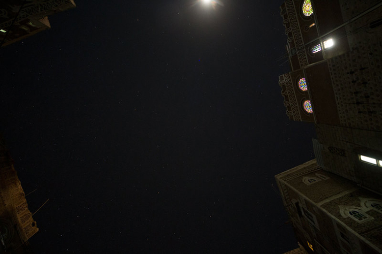

Bed Down Location, 2016

Bed Down Location, 2016
Mixed-media installation with digital color video, 3D sound
design, infrared camera, and closed-circuit video
Bed Down Location is a projection of the night skies over
Yemen, Somalia, and Pakistan-contries where the U.S.
military conducts "targeted killings" using unmanned aircraft.
The work also includes footage from Creech Air Force
Base in Nevada, where the military tests and flies drones.
The video is shown on the ceiling of the gallery space,
and a reaised platform invites visitors to lay back and gaze at
the skies where the drone wars are conducted
The 3D sound design layers audio from the sound of
drones flying, voices of drone pilots, and recordings of radio
noise heard at the edge of the universe, a reference to
the title of the exhibition, Astron Noise. The title of the work
refers to the military term denoting where a targeted
person sleeps.
The exhibition returns to Bed Down Location in its
final room, with the streaming data on view functioning as
an anxious reminder that surveillance has become
unbiquitous. Whether in the context of the war on terror
or the everyday use of social-media platforms, one's actions
are increasingly monitored and transformed into data
by governmental and corporate interests, the use of which
is rarely transparent.